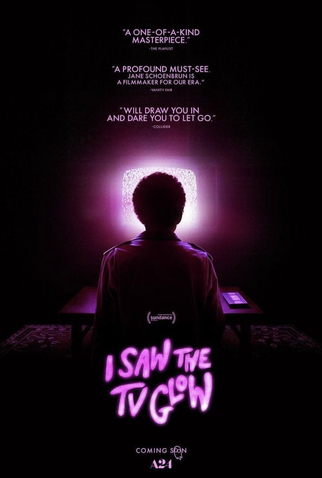

| Título do Filme |
Link |
Resumo |
Capa |
| Interstellar |
Assistir |
Interestelar é um épico de ficção científica dirigido por Christopher Nolan. A trama se passa em um
futuro onde a Terra enfrenta mudanças climáticas severas, ameaçando a sobrevivência da humanidade.
Cooper, um ex-piloto da NASA, é recrutado para liderar uma missão espacial em busca de novos planetas
habitáveis através de um buraco de minhoca perto de Saturno. Juntamente com uma equipe de cientistas,
ele explora mundos desconhecidos e enfrenta desafios extremos. O filme aborda temas de sacrifício, amor
e a relação entre pais e filhos, enquanto Cooper luta para garantir um futuro para seus filhos e para
toda a humanidade.
|
 |
| Tudo em Todo Lugar ao Mesmo Tempo |
Assistir |
Tudo em Todo Lugar ao Mesmo Tempo é um filme que mistura ficção científica, comédia e drama. A história
gira em torno de Evelyn, uma imigrante chinesa nos Estados Unidos que se vê envolvida em uma aventura
multiversal. Quando a realidade começa a se fragmentar, Evelyn descobre que ela deve se conectar com
versões alternativas de si mesma em outros universos para impedir uma ameaça que pode destruir o
multiverso. Entre saltos de realidade e confrontos surrealistas, o filme explora temas de identidade,
escolhas e família, entregando uma narrativa emocionante e visualmente espetacular. |
 |
| Spirited Away |
Assistir |
Spirited Away é uma animação japonesa do Studio Ghibli dirigida por Hayao Miyazaki. A história segue
Chihiro, uma menina de dez anos, que se encontra em um mundo mágico após seus pais serem transformados
em porcos. Presa em uma cidade repleta de espíritos e criaturas místicas, Chihiro deve trabalhar em uma
casa de banhos administrada pela bruxa Yubaba para encontrar uma maneira de libertar seus pais e
retornar ao mundo humano. Durante sua jornada, ela faz amigos inusitados e descobre sua própria coragem
e determinação. O filme é conhecido por sua animação deslumbrante e narrativa rica em simbolismo e
emoção. |
 |
| Eu Vi o Brilho da TV |
Assistir |
Eu Vi o Brilho da TV é um filme de drama e terror psicológico dirigido por Jane Schoenbrun. A história
segue Owen e Maddy, dois adolescentes que se conectam através de uma série de TV misteriosa chamada The
Pink Opaque. A série, que envolve adolescentes lutando contra monstros sob a influência de um vilão
conhecido como Mr. Melancholy, tem um impacto profundo em ambos. Quando Maddy desaparece e a série é
cancelada, Owen começa a questionar a realidade e sua própria identidade. O filme explora temas de
identidade, realidade e a influência da mídia, culminando em um final surreal e perturbador. |
 |